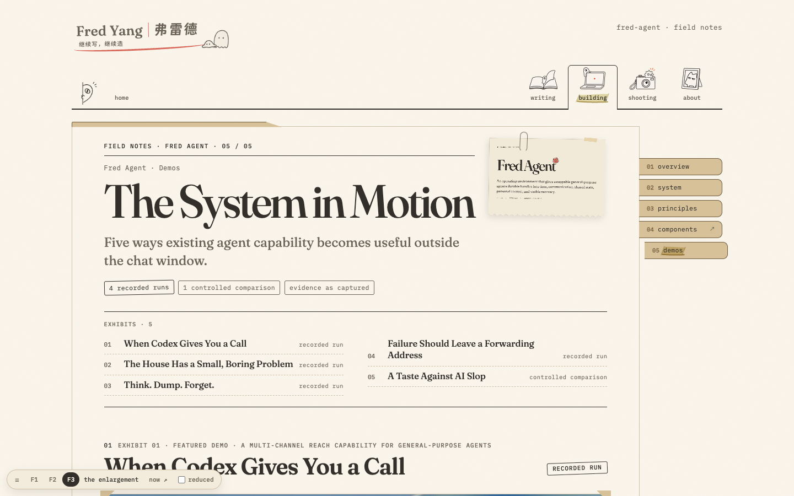
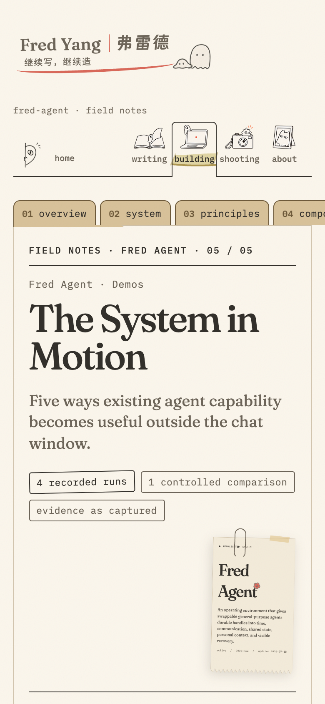
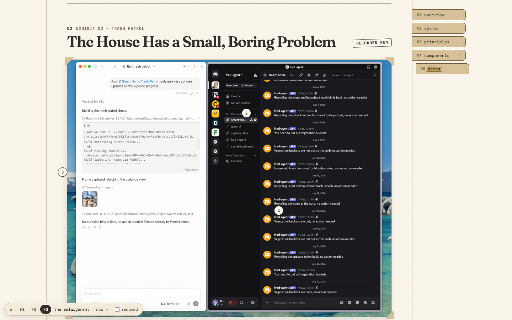
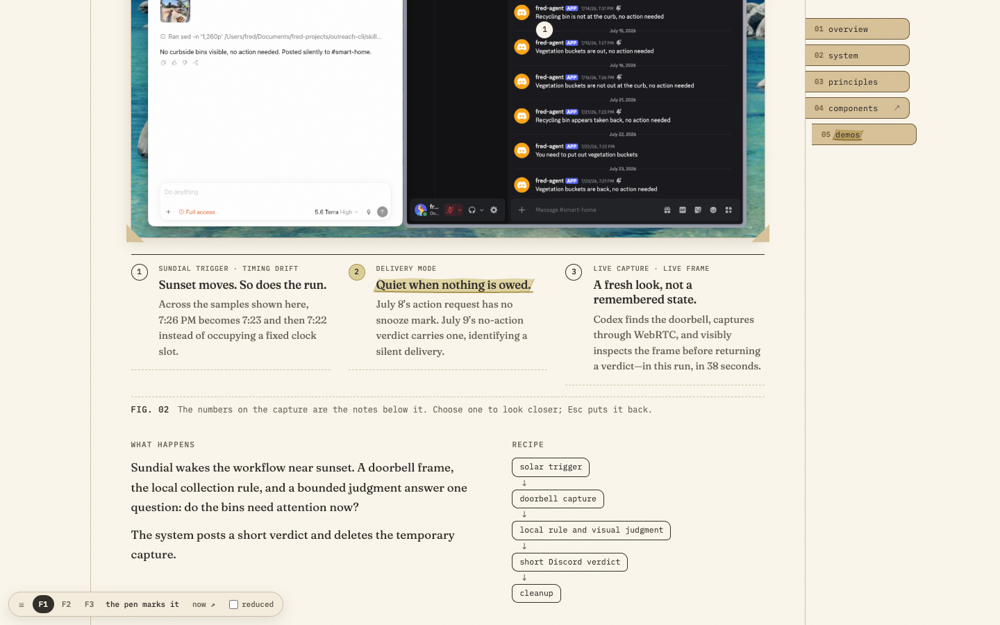
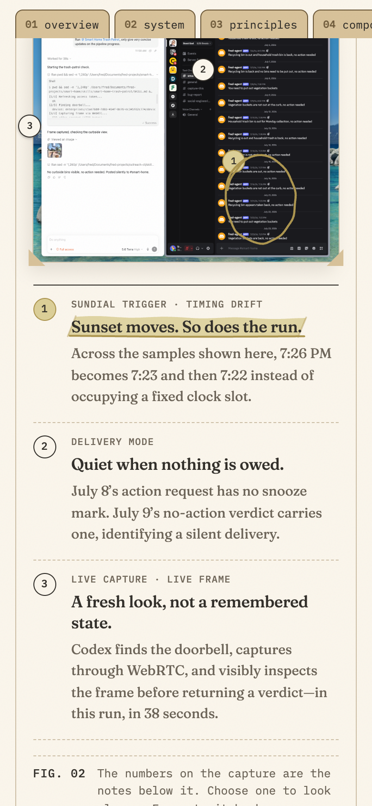
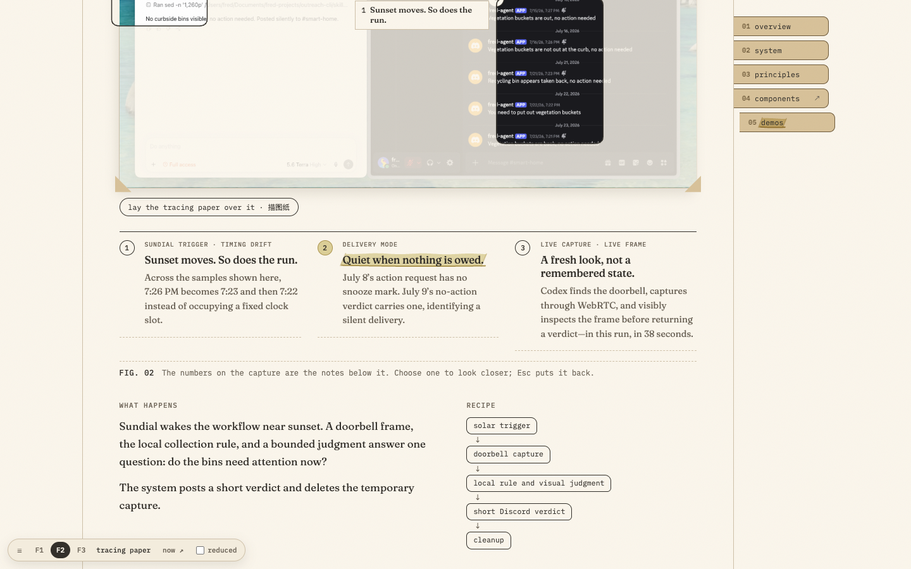
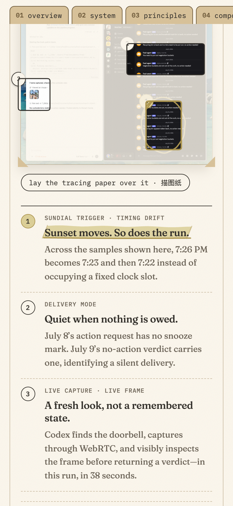
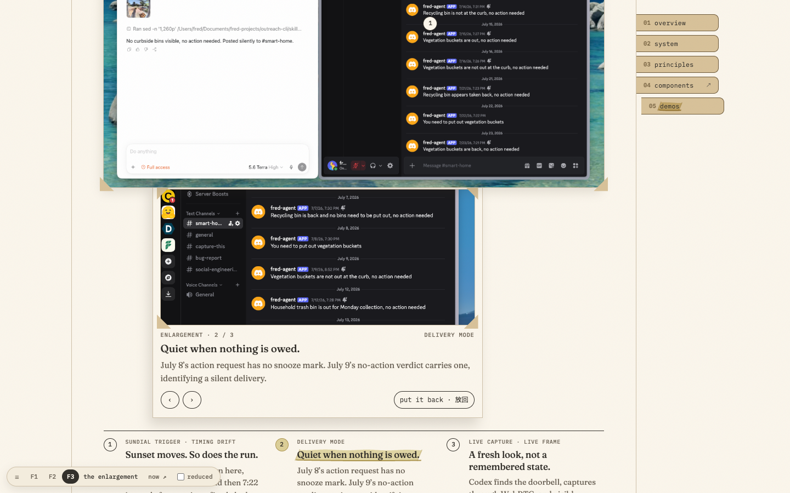
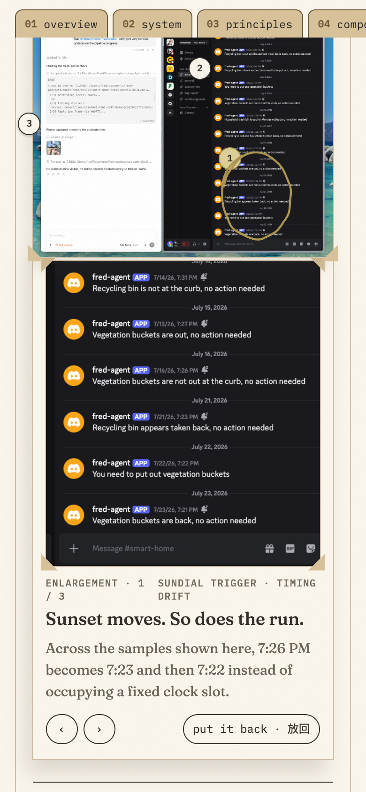

design/2026-09-building · round 2 · C 档案, the dossier
Demos in the dossier: the exhibits, and the evidence viewer's focus without the blur
Fred picked C. The one chapter the round-1 boards didn't mock and the port plan says needs Fred's eyes is Demos: 4 recorded runs, 1 controlled comparison, and the evidence viewers. This board is that chapter, with the real content, in C's language. Each demo is an exhibit on the dossier's sheet: a typed exhibit label, an evidence stamp ("recorded run", "controlled comparison"), the capture mounted as a print with kraft photo corners and a typed caption strip, and under it a typed legend numbered to the pen's marks on the print. The legend is always there, so the notes read without any interaction, without JavaScript, and with a screen reader.
Live: F1 the pen marks it · F2 tracing paper · F3 the enlargement · the live page today. The switcher in the page's lower-left corner changes treatment; "reduced" previews reduced motion.
The page, 1440 and 390



Focus without the blur: three treatments
Today's focus mode blurs the capture and floats the notes in glass boxes; on a phone the canvas scrolls sideways (1440, 390). All three treatments share one core: noticing a mark or a legend entry (a mouse, or keyboard focus) has the pen loop the region in coral; choosing it (click, tap, Enter, Space) makes it the one in focus, banded in wheat. What choosing shows is the treatment.








Keyboard and touch
| Input | What happens |
|---|---|
| Tab | One stop per region: the legend entries are the controls (button, aria-expanded, aria-controls). The marks on the print are for pointers and touch, hidden from assistive tech. Focus shows the pen's coral 「 」 and loops the region. |
| Enter / Space | Choose the region (again to clear). |
| ← → ↑ ↓ | Move between entries; with an enlargement out (F3) or a loop chosen (F1), the choice moves too. |
| Esc | Clear, and return focus to the entry. |
| Mouse hover | A mark or an entry: the pen loops its region in coral, and the entry gets the hover underline. |
| Tap | A mark or an entry chooses it; tap again to clear. No hover state on touch. F2: tap the sheet to lift it. F3: ‹ › and "put it back". |
| Reduced motion | Every state lands at once: no slide, no draw. |
How the video and the screenshots sit on the sheets
- Every capture is a print: paper2 behind it, a hairline edge and a short shadow, four kraft photo corners, and a typed caption strip ("FIG. 02 …") under it.
- The recording (exhibit 01) is a print of its poster with a typed "play the recorded run 0:58" button; play turns the print into the player in place. The video is
preload="none", so none of the 25.8 MB mp4 loads before play. - Phone captures (Discord intake, the recovery reports) are tall prints beside their legend at 1440, and a narrow print above it on a phone. The recovery exhibit is a contact sheet of three prints.
- The controlled comparison: the prompt on a typed slip, then A and B as two prints side by side; the settei library as three plates.
What generate-derivatives.py would need (not generated here)
- A Fred Agent evidence ladder in
scripts/generate-content.py: prints at about 640, 960, 1280 and 1760 px wide as WebP (AVIF optional), with the PNGs underbuilding/fred-agent/assets/fred-agent/demo/as the archived originals. Today the page serves about 12 MB of PNGs. - F3 cuts its enlargement from the print's
currentSrc; to read at size it needs the ladder's largest step (the phone captures are 1206 × 2622), fetched only when an enlargement opens. - The poster stays a 960 × 540 WebP (32 KB); the settei plates and the A/B pelicans (1.2–2.5 MB each) get the same ladder, lazy.
- Entries in
content/image-dimensions.jsonso every print has width and height (no layout shift). generate-fonts.py's page list doesn't includebuilding/**; the port adds it (the page's Chinese: 描图纸, 放回).
Known gaps in this board
- F3 opens in the flow between the print and the legend, so choosing from the legend moves the legend down by the enlargement's height. The port should keep the chosen entry still (scroll by the difference) or open the enlargement over the legend.
- On a phone the enlargement's counter and its key wrap side by side; stack them.
- The recording's play has no pen treatment beyond the hover underline; the evidence ladder is not built.
Question for Fred: which focus treatment should the Demos evidence viewers ship with: F1 (the pen's loop on the region, nothing else moves), F2 (a sheet of tracing paper with windows cut where the regions are), or F3 (an enlargement print pulled out from under the capture, recommended because it's the only one that makes the captures readable on a phone)?